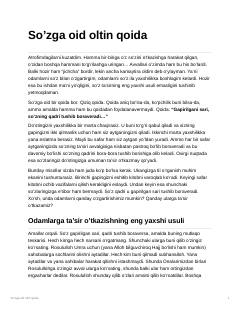

SOSo'z emas, amallar orqali insonlarga ta'sir ko'rsatish va o'rnak bo'lish haqidagi qiziqarli qo'llanma.
Mazkur asarda so'zlarning ko'p gapirilganda o'z qadrini yo'qotishi va insonlarga ta'sir o'tkazishning eng samarali usuli amallar orqali ekanligi haqida fikr yuritiladi. Muallif hayotiy misollar va tarixiy voqealar yordamida shaxsiy tarbiya va boshqalarga o'rnak bo'lish muhimligini tushuntiradi.